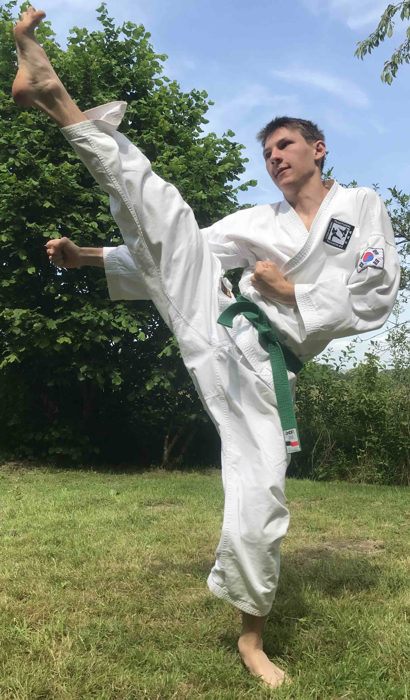

Taekwondo
Taekwondo ist eine Kampfsportart, die aus Südkorea stammt.Ich persönliche mache seit ca. 5 Jahren Taekwondo und habe aktuell den 5. Kup, was dem zweiten Grünen Gürtel entspricht.
Beim Taekwondo steigt man mit dem 10. Kup ein, wobei dieser dem Weißgurt entspricht.
Zum erlangen eines neuen Gürtels muss man zwei Kups aufsteigen wobei von 10 runter gezählt wird.
Einen neuen Kup erlangt man durch das erfolgreiche abschließen einer Prüfung mit Bruchtest und abfrage von Formen.
Die Abfolge der Gürtelfarbe ist weiß, gelb, grün, blau, rot und schwarz, wobei man ab dem schwarzen Gürtel nicht mehr zu den Kups zählt, sondern zu den Dans.
Bekommt man den ersten Schwarzgurt ist man erster Dan.
Ab dem ersten Dan wird hochgezählt, jedoch kann man beim traditionellen Taekwondo maximal den 7. Dan erreichen.
In Deutschland gibt es nur noch ganz wenige 7. Dans, da fast niemand mehr Schwarzgurte zum 7. Dan prüft.
Bei den Schwarzgurten ist nochmals zwischen zwei Stufen unterscheiden.
Wird man zum 1. Dan geprüft, hat man die Aufgabe sein Wissen weiterzugeben, weshalb man als Meister bezeichnet wird.
Ab dem 5. Dan zählt man zu den Großmeistern.
